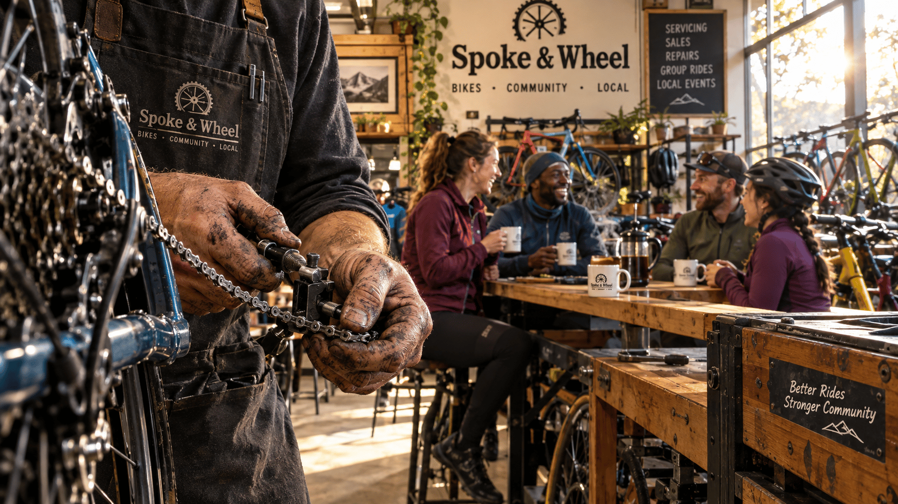

4-Platform Content Pack
Spoke & Wheel launches free hands-on Saturday bike maintenance workshops for the local cycling community
Click any post to edit. Copy buttons copy just the text.
A flat tire shouldn't end your ride—or your confidence.
Starting next month, Spoke & Wheel is running free Saturday morning bike maintenance workshops for anyone who wants to stop being stranded by simple fixes. We're talking flats, brake adjustments, chain maintenance—the stuff that actually matters.
Here's what makes this different: you work on your own bike with our mechanics walking you through every step. Tools, coffee, and zero judgment included. All skill levels welcome.
This isn't gatekeeping disguised as expertise. Basic bike maintenance is a fundamental right, not a professional secret. When you know how to fix your own bike, you ride further, ride more confidently, and actually enjoy the freedom that cycling promises.
Every Saturday, 9–11 AM at Maple Street. Show up, learn something real, grab a coffee, meet other riders who get it.
Join us this Saturday at 9 AM to master your bike maintenance.
Free bike maintenance starts Saturday
Learn to fix flats, brakes & chains—no experience needed.
You know that sinking feeling when your chain slips or you get a flat three miles from home? What if you could handle it yourself?
Starting next month, Spoke & Wheel is hosting free Saturday morning workshops (9–11 AM) where you'll learn the essential repairs that actually matter: fixing flats, adjusting brakes, cleaning chains. Our mechanics work directly on your bike, so every skill translates immediately to the road.
No experience required. All tools and coffee provided. Just show up.
This is about giving every rider the self-sufficiency to maintain their own equipment and the confidence to ride further. Because mechanical breakdowns shouldn't limit your freedom.
Join us this Saturday at 9 AM at Spoke & Wheel on Maple Street. Your next ride starts here.
Never get stranded by a flat tire again.

Imagine the absolute freedom of a ride where you never have to worry about a flat tire ruining your day.
Mechanical stress shouldn't keep you off the road. At Spoke & Wheel, we believe basic bike maintenance isn't a professional secret—it's a fundamental right for every rider. That's why we're launching free Saturday morning workshops on Maple Street to help you take control of your ride.
Every Saturday from 9 to 11 AM, our mechanics provide hands-on demos for:
🛠 Fixing flats on the fly
🛠 Adjusting your own brakes
🛠 Proper chain maintenance
Bring your own bike and get grease on your hands while we provide the tools and the coffee. Whether you're a daily commuter or a weekend explorer, join our supportive community and gain the self-sufficiency to ride further with confidence.
Join us at Spoke & Wheel this Saturday at 9 AM to master your bike maintenance!
Stop Worrying About Flat Tires: Free Bike Workshops 🚲
Imagine never worrying about a flat tire ruining your ride again. At Spoke & Wheel on Maple Street, we believe basic bike maintenance isn't a professional secret—it's a right every rider should have for free. That's why every Saturday from 9 to 11 AM, we're hosting hands-on workshops. You don't just watch us; you bring your own bike and our mechanics walk you through the repairs. We cover the essentials that usually strand riders: fixing flats, adjusting brakes, and chain maintenance. We provide all the tools and even the coffee to keep the community vibes going. You'll gain the self-sufficiency to maintain your own gear and the confidence to explore further without fear of mechanical failure. The freedom of the ride belongs to you. Join us at Spoke & Wheel this Saturday at 9 AM to master your bike maintenance.
Never fear a flat tire again
Hands-on repair with YOUR bike
Master flats, brakes, and chains
Free tools & fresh coffee
Join us Saturday @ 9AM
Close-up of a frustrated cyclist looking at a flat tire on a busy city street corner.
A mechanic's grease-stained hands guiding a participant as they adjust a brake cable on their own bike.
Close-up of steam rising from a coffee mug next to a set of professional bike tools on a wooden workbench.
Wide shot of a diverse group of cyclists laughing and chatting in the sun-drenched Spoke & Wheel workshop.
Creator standing in front of the Spoke & Wheel storefront on Maple Street, smiling and gesturing for the viewer to come inside.
Stop letting mechanical anxiety hold back your rides. Join our free bike maintenance workshop every Saturday to learn how to fix a flat tire and more. See you at Spoke & Wheel on Maple Street at 9 AM!
Empowering local cyclists through free, hands-on education builds a more confident and connected riding community.
Spoke & Wheel on Maple Street is launching free Saturday morning bike maintenance workshops starting next month. Running from 9 to 11 AM, these sessions invite riders of all skill levels to learn essential repairs like fixing flats, adjusting brakes, and chain maintenance. Mechanics provide hands-on demonstrations using the participants' own bikes, with all necessary tools and coffee provided by the shop to foster a supportive community environment.
Daily commuters who rely on their bikes for transport and weekend hobbyists who want to explore further without fear of mechanical failure. They value practical skills, neighborhood connections, and a non-intimidating learning environment.